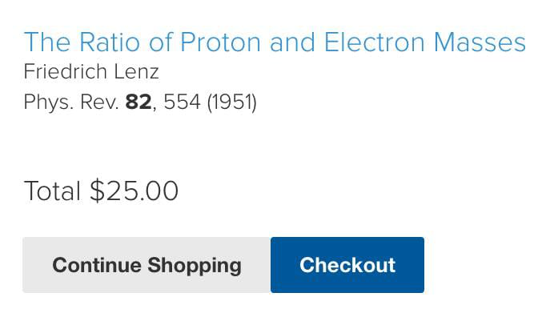

Fizikteki en kısa makalelerden biri olabilir: Elektron ve protonun kütle oranının yaklaşık 6π5 olduğunu bulana Physical Reviews’da makale basmak hediye!
İşin garibi de şu üç satırlık makaleye bakmak için üniversite ağı olmasa 25 dolar vermek zorundayız!
Not: 2022 itibariyle bu rakam yaklaşık 1836.15 civarında.
